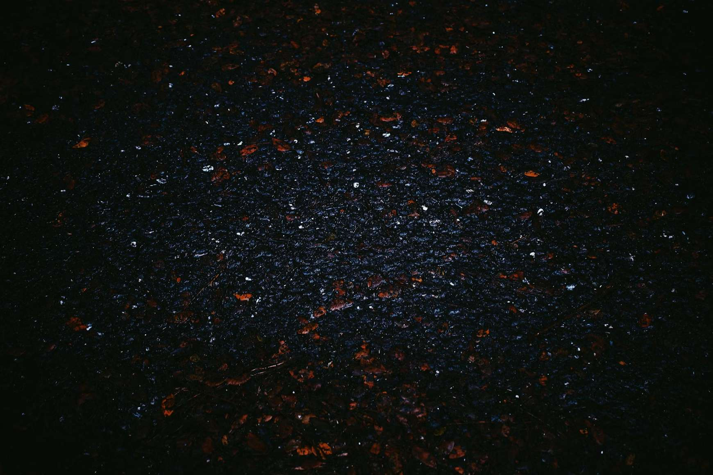

编者按
本投稿成文于2022年，现作为10月10日“世界精神卫生日”特辑发表。
亲爱的陌生人，我猜，你的回答，或许是『想过』吧。
是的，我们都曾在这个问题的边缘徘徊过，不是吗？😜
如果你此刻正站在情绪的悬崖，请记得，先向你信任的人伸出手。
主动寻求帮助，也是一种勇敢。
心理学家阿德勒说：“幸福的人用童年治愈一生，而不幸的人用一生来治愈童年。”
我一个很好的朋友曾对我说，“我觉得，你是一个内核不稳的人。”
我的童年，虽非不幸，却也与“幸福”隔了些距离。“内核不稳”一词，倒是一针见血的。
初高中时，我曾有严重的自杀倾向。如今，我早已上大学了。
原以为往事已随风，可谁料到，一场梦魇突然袭来。
就像二十多年前扣下扳机，如今那颗子弹，不偏不倚，正中眉心。
不同于普通的“噩梦”，“梦魇”会反复发生，并且醒来后仍清晰记得，被不安牢牢包裹。
原来有些伤，很难随时间完全愈合。
它们只是藏在记忆的盒子里，等你以为自己足够坚强时，“咔嗒”一声，重新打开。
所以今天，我想把盒子里的东西摊开给你看。
如果你也正经历类似的黑暗，请记得，你并不孤单。
之一 不算美好的成长
即使过了很长一段时间，小时候的一些碎片，仍偶尔从我的脑海里闪过。
我的童年，搁浅在一座繁华都市的小康之家。
三四岁那年，爸爸妈妈带我去动物园。
路上，我看见一只塑料蝴蝶玩具，像个小风车，下面连着细杆。只要举着奔跑，它的翅膀就会飞舞，如梦如幻。
我一次次央求，他们一次次拒绝。
最后，我在人来人往中放声大哭，眼泪呛进喉咙，咳得直打嗝。
父母的巴掌落下，似乎不轻也不重。
路人的目光刺向我。
无尽的窒息。
转眼就到了小学。满分的成绩单，是我和父母之间的“和平条约”。
我的成绩总是第一第二名，父母觉得，这是理所当然的。
但也有意外。五年级的一次数学单元测，我因为粗心只拿了95分。
试卷需要家长签名。父亲看见分数，勃然大怒，把试卷揉成纸团。
眼泪夺眶而出。
良久，他展开纸团，签上名，说了些鼓励的话。
但我什么也没听清，只留下褶皱纸张的窸窣声在耳边回响。
第二天我把试卷交给老师，老师什么也没问。无言就是最大的救赎。
六年级是小升初的关键年。
有一天我向母亲说，我周末不想上那么多课外班了。
她说，我一个很熟的同学周末两天从早到晚都在上课，问我是不是不想上。
“不想上？那就把所有的课外班都退了吧！就当我没养过你！”
我的课，也确实没有他多。我没再敢说话。
沉默，被当做了默许。我不知道如果我拒绝了会怎样。那天晚上，我躲在被窝里，哭了。
原来“懂事”的代价，是连哭都要挑时间。
初中三年，是与父母抗争的三年。
但具体是在抗争什么，我至今也说不清楚。
父母说，就是青春期的孩子叛逆爱吵架。
我只记得，很多东西在那时碎了——碗、门锁，可能还有活着的希望。
我给摔碎的东西拍照。那时总觉得，照片能证明“我不是无理取闹”。
所幸，成绩仍然是掩盖一切问题的遮羞布，而我初三一年和中考的成绩恰好尚可，父母对我的态度总体也不错。
但长此以往，消极的情绪慢慢累积。等到高中，终于决堤了。
之二 高中的我，想要自杀
高一的我，适应得很吃力，成绩不再领先。最后一块遮羞布，被扯下了。
父母的指责越来越频繁，我的自杀念头，也达到顶峰。
父母将给我的iPhone 5s，连同我的自尊心，一起狠狠摔碎。
可之后的一天，他们却又让我自己挑一部新手机，即便是不便宜的iPhone或者华为也可以。
但新手机，没能换来新人生。成绩、责备、自责……我陷进恶性循环的漩涡，看不见光。
我的身体开始“背叛”我——那时我还不知道，什么是“躯体化”。
首当其冲的是睡眠障碍。每夜噩梦，大喊着醒来，一夜反复几次。枕头湿了一半，分不清是汗还是泪。
接着是气胸。胸口闷痛，呼吸都变得谨慎。医生说：“你要学会减压。”
可没有人告诉我，该如何给一个正在下沉的人减压。
几乎同时，耳鸣也开始纠缠。跑遍医院，检查结果一切正常。
身体，用疼痛拉响警报；而意念，开始向更黑暗处沉沦。
于是，危险的闪念，开始悄然滋生。
我曾独自走到湖边，长久地凝视那片幽深、墨绿的湖水。
风很轻，水面泛起细小的涟漪，仿佛在发出无声的召唤。
我也曾站上高楼的天台，在高处的风中俯视脚下的城市深渊。
车辆如蚁，灯火明灭，一种虚空的引力，从下方阵阵袭来。
这些念头如此清晰，几乎触手可及。
然而，最终，我连亲手结束这一切的勇气，都没有。
高考前夜，我仍和父母争执。整夜无眠。
结果不出所料，我考砸了，虽不严重，却是我所有大考中最差的一次。
后来，我去了一所不好也不差的大学。
接下来，是大学时代。但在那之前，我想回过头，重新看看他们。
之三 父母并非不爱我
现在回想，初高中那时的父母，并非不爱我。
我们不是本地人，他们白手起家，一切不易。
从小到大，我从没感觉过经济上的窘迫。
衣服、零食、日常用品，他们总在自己能承担的范围内，给我挑最贵的。
高中时，他们甚至尝试带回来一只小狗，一只活泼的小狗，来安慰我。我把它看作爱的一个重要证据。
现在我想，他们只是被时代卷着走，受限于自己的认知、学历和经济条件。
他们用自己认为对的方式爱我，对我怀有高期待，一旦落空，情绪就难以抑制。
他们本质是爱我的。
只是这样的“瞬间”太多，让我一度相信，他们的爱是有条件的——要我乖、要好成绩、要身体健康。
一旦不符合，爱就收回。
而这，在那个年少的我看来，根本不是爱。
之四 我以为，我放下了之前所有
上大学后，我离开家，去陌生城市生活。
沟通慢慢变多，他们也开始理解我的心路。寒暑假回家，吵架渐渐少了；他们学着放下期待，尝试无条件爱我。
一切似乎在变好。我以为我真的放下了。
可现实并不允许。
就像在树上钉钉子，拔掉之后，洞孔却永远无法弥合。
某个夜晚，梦魇再次侵袭。
那只求而不得的蝴蝶，穿过时光的长河，扑腾着飞向我。
只是这一次，它面目可憎。
凌晨三点，意识在混沌中浮起。
此刻，我与岸上的世界之间，隔着寂静的汪洋。
所有声音、光影，都因我沉入水底，而变得模糊不清。
没有人爱我，也没有人不爱我。爱与不爱的念头本身，也轻飘得失去了重量，悬浮在水中。
触觉变得迟钝，听觉逐渐失聪。整个世界，正从我的意识里，温柔又决绝地，缓缓抽离。
我对村上春树的文字感同身受：
“一次，半夜突然醒来。”他开始讲述，“确切时间不清楚，大约两三点吧，也就那个时间。
请你想象一下：四下漆黑一片，什么也看不见，什么也听不见，就连时钟声都听不见，也可能钟停了。
“什么时候并不重要，总之是夜深时分，我完完全全孤单一人，身边谁也没有。
我忽然觉得自己正被隔离开来，远离自己认识的人，远离自己熟悉的场所，远得无法置信。
在这广大世界上不为任何人爱，不为任何人理解，不为任何人记起——我发现自己成了这样的存在。
即使我就这么消失不见，也没有人察觉。那种心情，简直就像被塞进厚铁箱沉入深海底。
由于气压的关系，心脏开始痛，痛得像要咔哧咔哧裂成两半。这滋味你可知道？”
少女点点头。想必她是知道的。
即使我有许多朋友，这种感觉仍避无可避。
于是我尝试回头，梳理来路，也于是有了你正读到的这些文字。
之五 那些，未曾说出口的
是的，我有很多好朋友，从初中到大学的每个阶段都有。
无论是男生还是女生，他们都是很好的人。我的邀约，很少落空；我的困境，常有回响。
但我从未开口和他们提及我的心路历程——是惧怕。
惧怕自己笨拙的言语，不足以承载那些过往的重量；更惧怕，我珍视的朋友们，眼中会浮现出困惑的光芒。
于是，千言万语，终是沉默。

当时，一位女生朋友察觉出了我的异常。她问我最近是不是遇到了什么事情了，感觉我不太开心。
在那段最黑暗的漩涡里，她请我吃饭，陪我自习。我尽量表现得很正常，她便没有继续追问。
于她而言，也许这只是寻常的朋友相伴；于我，是让我在下坠的途中，幸得片刻的托依。

我至今没能郑重地跟她说一句“谢谢”。大恩不言谢吧。
不过，我深知，那片笼罩我的迷雾，根源深埋在我自己的来路。最终还是没选择告诉她原委。
成长是各自的朝圣路，没有人能代替另一个人完成成长。
之六 走在自己的朝圣路上
所以，我依然在回望，在探寻。
“所谓成长，最终不过是学会如何内心谐和地活在这个世界上。”
我们已不可能消灭所有痛苦的回忆，变成一个完美无缺的人。
相反，我们终究要学着，与那个带着伤疤的自己，并肩坐在这个时而吵闹、时而寂静的世界里，不再彼此为敌。
我们生而赤足前行，脚步或深或浅，无人可以替代。
我信奉成长，但并不信奉一个光明的结果，而是信奉眼泪的重量；
我信奉，黑夜过后，指尖还能触到的一丝暖意；
我信奉这条路上每一步的本身。

如今，我确实已经很久，没有再升起结束生命的念头。
这并不是说，所有伤痕都已痊愈；
而是说，我慢慢听懂了内心深处细微的声响，学会了接住自己突如其来的悲伤，也学会了将他人给予的点点微光，小心翼翼地收藏。
也许，你正走在你路上最崎岖的一段。
如果你愿意分享，我会安静地听。因为你的故事，你的看法，或许也会成为照亮我前路的一盏小灯。

结束这长篇自白前，我最大的愿望，是能穿越时光，轻轻抱一抱那个在动物园门口大哭、在深夜试卷前流泪的小孩。
我想在他耳边，轻轻说：
没关系的，往后，那只求而不得的蝴蝶，会化作一千种不同的美好，轻轻，落在你的肩头。
最后，愿读到这里的你，能在自己的朝圣路上，遇见平静，也遇见温柔。
全文完。
图源
https://unsplash.com/photos/person-standing-on-mountain-cliff-ZriVXRZbFqkhttps://unsplash.com/photos/closeup-photo-of-white-paper-boat-CUU4sS16UTkhttps://unsplash.com/photos/a-swing-set-in-a-playground-Mtn8eX6wra8https://unsplash.com/photos/a-large-clock-tower-with-roman-numerals-on-it-d99iek6OYu4https://unsplash.com/photos/Pj5qw2b1uGkhttps://unsplash.com/photos/person-writing-on-white-paper-qDgTQOYk6B8https://unsplash.com/photos/a-broken-cell-phone-sitting-on-top-of-a-table-zevGz508koAhttps://unsplash.com/photos/water-splash-in-close-up-photography-LUnVAzlHPc4https://unsplash.com/photos/white-and-black-abstract-painting-BUj0b6pfqY4https://unsplash.com/photos/a-close-up-of-a-door-ZYkO7IEO7Dchttps://unsplash.com/photos/a-tree-that-has-a-lot-of-holes-in-it-g_JzGfHuGzQhttps://unsplash.com/photos/a-close-up-of-a-butterfly-on-a-plant-yR-OiMhC0SIhttps://unsplash.com/photos/a-body-of-water-with-dark-clouds-f6CXGwG6pTUhttps://unsplash.com/photos/a-red-light-shines-on-a-refrigerator-in-a-dark-room-xI8yk9DwH0Yhttps://unsplash.com/photos/a-black-background-with-small-red-and-white-speckles-y2W__aFBxcchttps://unsplash.com/photos/a-dirt-path-in-the-middle-of-a-forest-Y50pJCr2DP0https://unsplash.com/photos/leafless-trees-on-snow-covered-ground-ocqtqOqq47Qhttps://unsplash.com/photos/person-holding-dandelion-flower-G-JJy-Yv_dAhttps://unsplash.com/photos/white-clouds-and-blue-sky-hd3zqYbhfXshttps://unsplash.com/photos/heart-shaped-black-stone-on-green-grass-cPGv4rXhryc


 无关男女，关乎敌友">
无关男女，关乎敌友">
发表您的看法